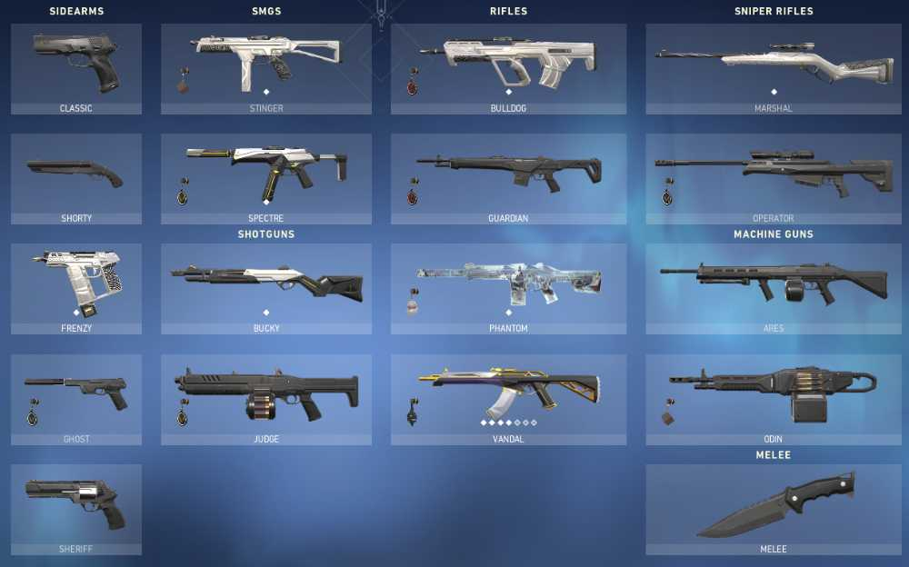

cs2 news
Catalog Description: This is a seminar course in which computer scientists describe their professional activities and interests. The aim is to give entering undergraduate students a comprehensive view of the field. Students will be required to give presentations on papers they read and projects they complete
cs2 guns
Counter-Strike is the most popular shooter game in the world, and it has been for quite some time. Despite the fact that CS:GO had been out for over ten years, the game was still reaching new player records in its final year, and just when people thought that the hype around Counter-Strike couldn’t get any bigger, Valve announced CS2. With the game now released, we can only imagine the highs that the world’s most popular shooter franchise will reach.
cs2 player

Witnessing top players’ exceptional skills, dedication, and passion is enough to inspire us on our gaming quests. Let’s dive into the profiles of the nine best CS2 players worldwide, including that highly acclaimed gamer everyone knows about!